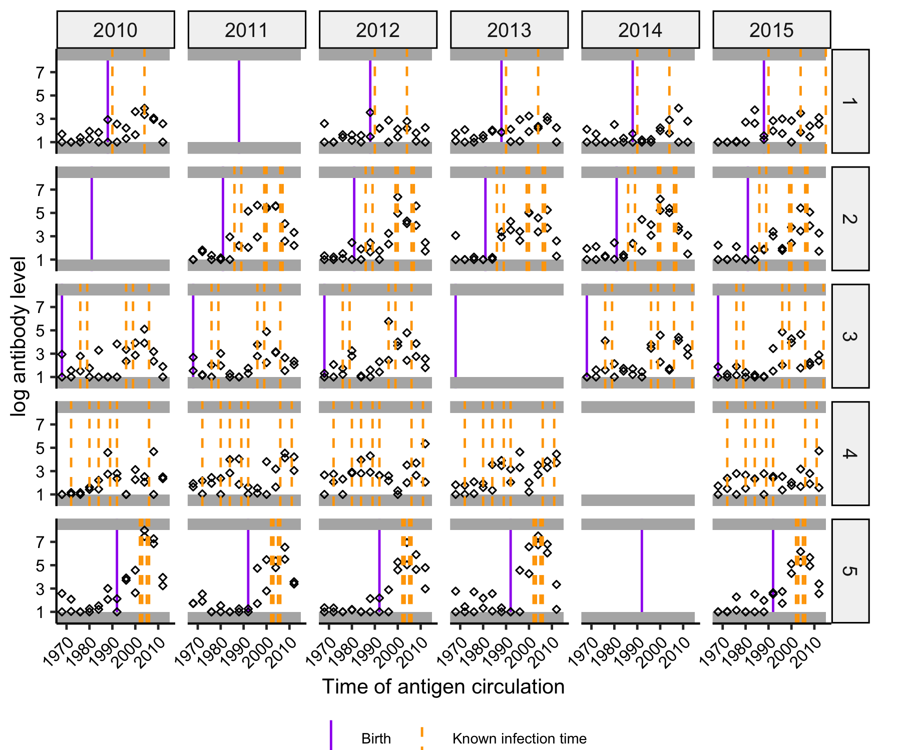
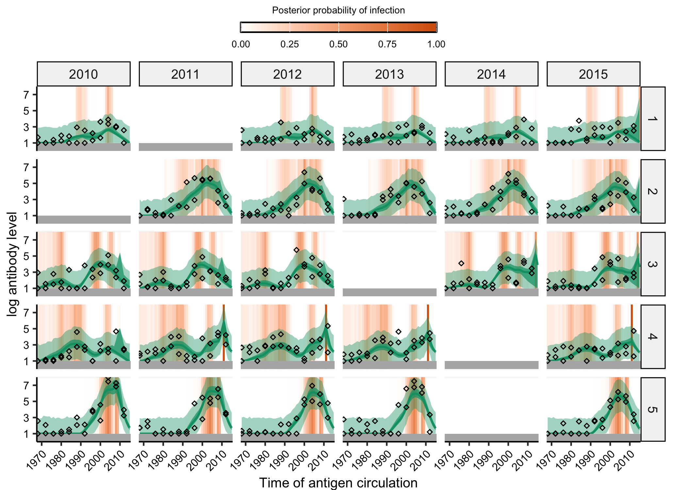

serosolver uses a hierarchical model with a custom Markov chain Monte Carlo sampler to simultaneously infer antibody kinetics and infection histories from cross-sectional or longitudinal serological data. serosolver is a time-since-infection serodynamics model, meaning that infection times are back-calculated from one or more antibody measurements through an antibody kinetics model. serosolver can be used to infer infection timings during a study period using longitudinal measurements against a single antigen, or lifetime infection histories using multi-antigen serology panels. The package and model are described by Hay et al. here.
New features
The current version ofserosolver includes the following new features.
New features:
- Generalisation to multiple biomarker types per sample (e.g., antibody titre and avidity)
- Support for continuous and discrete observations (e.g., ELISA data and HAI titres)
- Stratification by demographic variables
- Fixing infection states during fitting
- Fixing or estimating starting titres
- Improved user interface
Installation
Install the development version of serosolver from GitHub:
remotes::install_github("seroanalytics/serosolver")
library(serosolver)Note that serosolver has been overhauled relative to published version. Please use the published branch to ensure continued compatibility with older projects.
remotes::install_github("seroanalytics/serosolver", ref = "published")Dependencies
A working C++17 compiler is needed. The package uses Rcpp, RcppArmadillo, and RcppParallel.
required_packages <- c(
"data.table", "ggplot2", "dplyr", "tidyr", "Rcpp", "coda",
"doParallel", "doRNG", "foreach", "Matrix", "MASS", "reshape2",
"tibble", "RcppArmadillo", "RcppParallel"
)
additional_packages <- c(
"remotes", "devtools", "plyr", "tidyverse"
)
install.packages(c(required_packages, additional_packages))Resources
Read the guide to set up and run a simple implementation with a simulation model.
Additional vignettes:
- Longitudinal case study: estimating infection timings using longitudinal data, with an example from influenza A/H1N1p in Hong Kong
- Cross-sectional case study: estimating life-course infection histories from multi-strain serology, with an example from the Fluscape cohort
- Advanced features: examples of fixed infection states, starting antibody levels, measurement offsets, exponential waning, multiple biomarker groups, and prior version 1
- Demographic variables and covariates: estimating demographic differences in antibody kinetics and infection-history priors, with an example of variant-stratified parameters
- Naming conventions: the current names for datasets, variables, and model inputs
- Frequently asked questions: common questions about data, model fitting, diagnostics, and troubleshooting
Example
This is a basic example of simulating some serological data and fitting the model using the MCMC framework.
library(serosolver)
## Load in example parameter values and antigenic map
data(example_par_tab)
data(example_antigenic_map)
data(example_antibody_data)
data(example_inf_hist)
## Check the dataset and model control table for errors
example_antibody_data <- check_data(example_antibody_data)
example_par_tab <- check_par_tab(example_par_tab)
plot_antibody_data(example_antibody_data,example_antigenic_map$inf_times,n_indivs=1:5,infection_histories=example_inf_hist)
## Run serosolver
readme_mcmc_dir <- file.path("inst", "extdata", "readme", "chains")
dir.create(readme_mcmc_dir, recursive = TRUE, showWarnings = FALSE)
output <- serosolver::serosolver(example_par_tab, example_antibody_data, antigenic_map=example_antigenic_map,
filename=file.path(readme_mcmc_dir, "readme"), n_chains=3,parallel=TRUE,data_type="continuous",
mcmc_pars=c(adaptive_iterations=10000, iterations=50000),verbose=TRUE)
#> ================================ Running serosolver ================================
#> Requested 3 chains in parallel, setting up parallel session using the parallel package
#> Progress messages will be piped to inst/extdata/readme/chains/readme_log.txt when `parallel` is set to true
#> Model fitting started
#> Model fitting done!
#> Generating MCMC diagnostics
#> Generating output plots
#> ================================ Finished ================================
output$plot_fits_cross_sectional
#> [[1]]
AI declaration
AI assistance was used during development of this package for documentation drafting, repository audits, code review, and selected implementation edits. Most of this assistance was provided using OpenAI’s GPT-5 model. The package author is responsible for reviewing and approving all changes. The core of serosolver remains the same as the published version; new advanced features were developed and implemented manually, with some AI assistance used to align complex coding workflows.